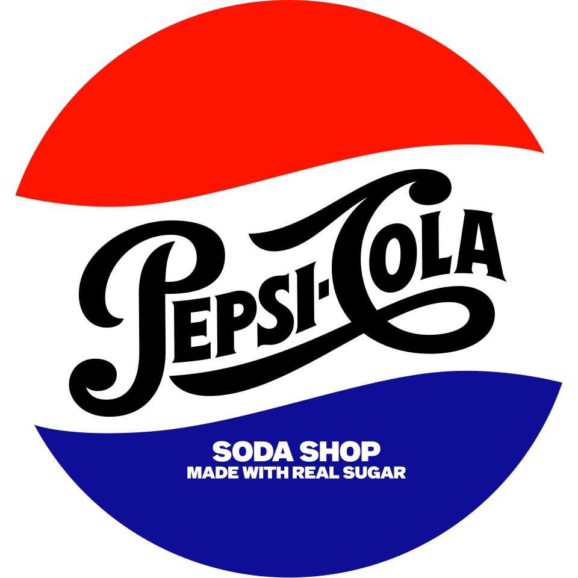
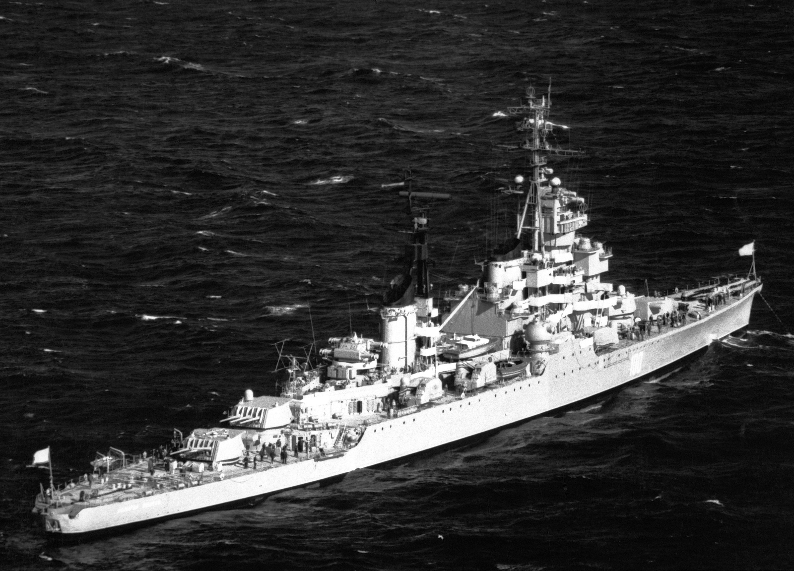
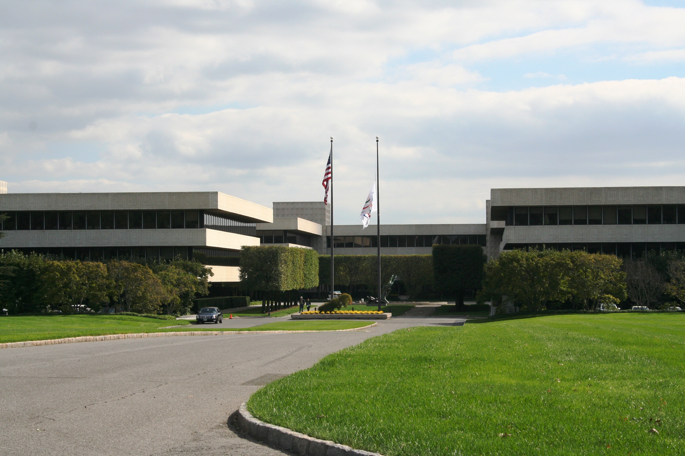
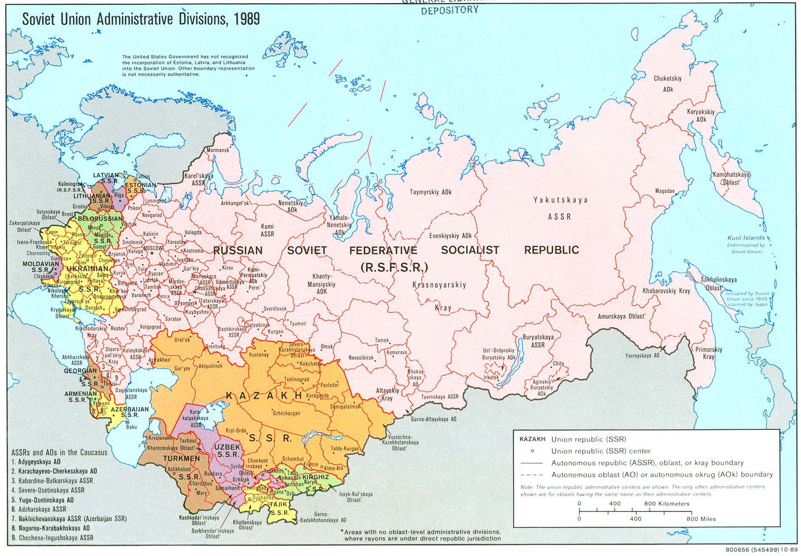
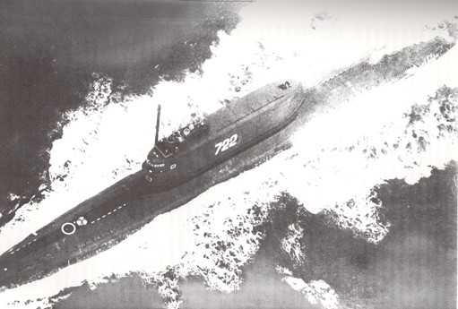
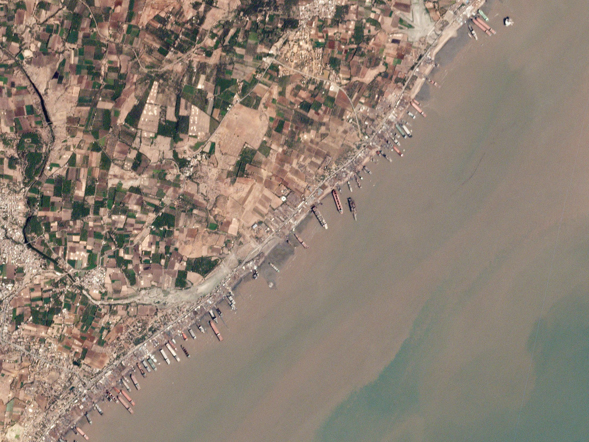
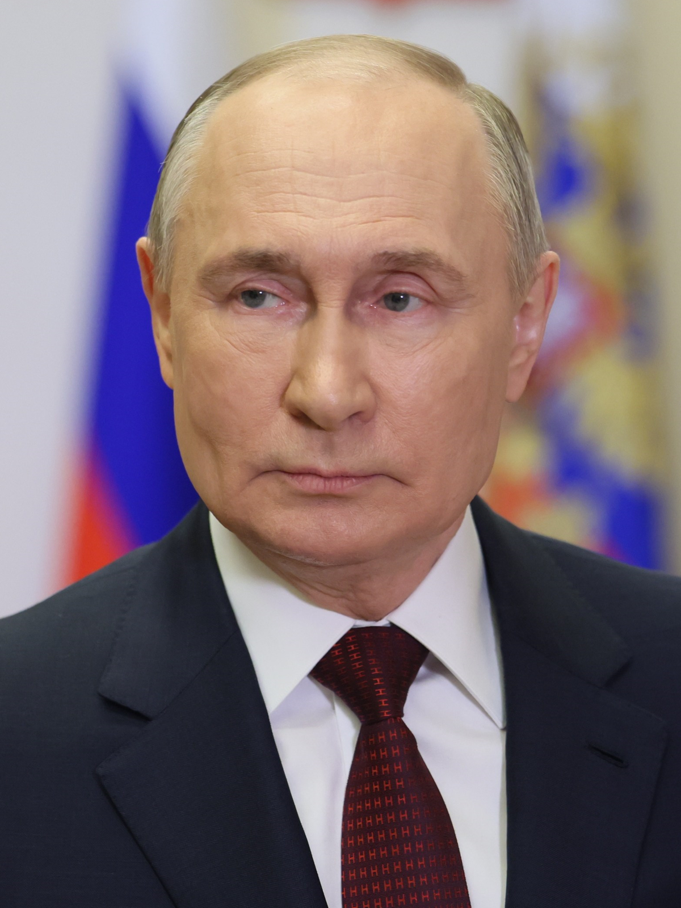

百事可樂的蘇聯海軍
共 55 幕分鏡 · 預估成片總長度：10分15秒 (615.9s) · 自動生成於 20261003_百事可樂的蘇聯海軍
🎞️ 各場景分鏡與語音審查
001_scene_1 · 第 1 幕
🖼️ 畫中畫 PiP
時長: 16.47s

疊加參考圖 (PiP)：

002_scene_2 · 第 2 幕
時長: 11.05s

003_scene_3 · 第 3 幕
時長: 12.46s

004_scene_4 · 第 4 幕
時長: 17.3s

005_scene_5 · 第 5 幕
🖼️ 畫中畫 PiP
時長: 14.66s

疊加參考圖 (PiP)：

006_scene_6 · 第 6 幕
時長: 13.66s

007_scene_7 · 第 7 幕
🖼️ 畫中畫 PiP
時長: 13.1s

疊加參考圖 (PiP)：

008_scene_8 · 第 8 幕
時長: 13.66s

009_scene_9 · 第 9 幕
時長: 12.7s

010_scene_10 · 第 10 幕
🖼️ 畫中畫 PiP
時長: 11.33s
無畫面
疊加參考圖 (PiP)：

011_scene_11 · 第 11 幕
🖼️ 畫中畫 PiP
時長: 15.24s

疊加參考圖 (PiP)：

012_scene_12 · 第 12 幕
🖼️ 畫中畫 PiP
時長: 13.21s

疊加參考圖 (PiP)：

013_scene_13 · 第 13 幕
🖼️ 畫中畫 PiP
時長: 9.61s

疊加參考圖 (PiP)：

014_scene_14 · 第 14 幕
時長: 15.16s

015_scene_15 · 第 15 幕
時長: 6.41s

016_scene_16 · 第 16 幕
🖼️ 畫中畫 PiP
時長: 13.85s

疊加參考圖 (PiP)：

017_scene_17 · 第 17 幕
時長: 12.3s

018_scene_18 · 第 18 幕
🖼️ 畫中畫 PiP
時長: 19.55s
無畫面
疊加參考圖 (PiP)：

019_scene_19 · 第 19 幕
時長: 6.6s

020_scene_20 · 第 20 幕
時長: 12.41s

021_scene_21 · 第 21 幕
時長: 8.21s

022_scene_22 · 第 22 幕
時長: 7.85s

023_scene_23 · 第 23 幕
時長: 15.62s

024_scene_24 · 第 24 幕
時長: 6.0s

025_scene_25 · 第 25 幕
🖼️ 畫中畫 PiP
時長: 14.42s
無畫面
疊加參考圖 (PiP)：

026_scene_26 · 第 26 幕
🖼️ 畫中畫 PiP
時長: 6.96s

疊加參考圖 (PiP)：

027_scene_27 · 第 27 幕
🖼️ 畫中畫 PiP
時長: 10.73s

疊加參考圖 (PiP)：

028_scene_28 · 第 28 幕
時長: 14.06s

029_scene_29 · 第 29 幕
時長: 12.29s

030_scene_30 · 第 30 幕
時長: 10.65s

031_scene_31 · 第 31 幕
時長: 10.25s

032_scene_32 · 第 32 幕
🖼️ 畫中畫 PiP
時長: 10.69s

疊加參考圖 (PiP)：

033_scene_33 · 第 33 幕
時長: 10.65s

034_scene_34 · 第 34 幕
時長: 13.06s

035_scene_35 · 第 35 幕
時長: 8.81s

036_scene_36 · 第 36 幕
時長: 8.25s

037_scene_37 · 第 37 幕
🖼️ 畫中畫 PiP
時長: 10.25s
無畫面
疊加參考圖 (PiP)：
038_scene_38 · 第 38 幕
時長: 12.38s

039_scene_39 · 第 39 幕
時長: 10.77s

040_scene_40 · 第 40 幕
時長: 11.32s

041_scene_41 · 第 41 幕
時長: 10.25s

042_scene_42 · 第 42 幕
時長: 8.05s

043_scene_43 · 第 43 幕
時長: 5.24s

044_scene_44 · 第 44 幕
🖼️ 畫中畫 PiP
時長: 11.34s

疊加參考圖 (PiP)：

045_scene_45 · 第 45 幕
時長: 13.46s

046_scene_46 · 第 46 幕
時長: 6.34s

047_scene_47 · 第 47 幕
時長: 8.61s

048_scene_48 · 第 48 幕
時長: 12.42s

049_scene_49 · 第 49 幕
時長: 6.6s

050_scene_50 · 第 50 幕
時長: 8.45s

051_scene_51 · 第 51 幕
時長: 15.3s

052_scene_52 · 第 52 幕
時長: 6.24s

053_scene_53 · 第 53 幕
時長: 8.69s

054_scene_54 · 第 54 幕
時長: 11.09s

055_scene_55 · 第 55 幕
時長: 9.89s